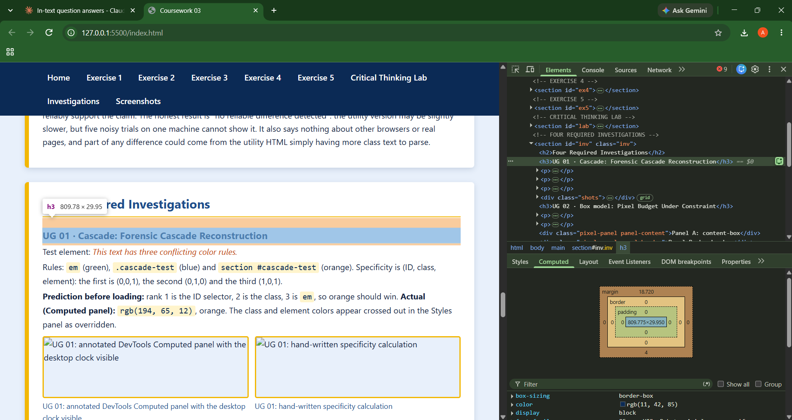
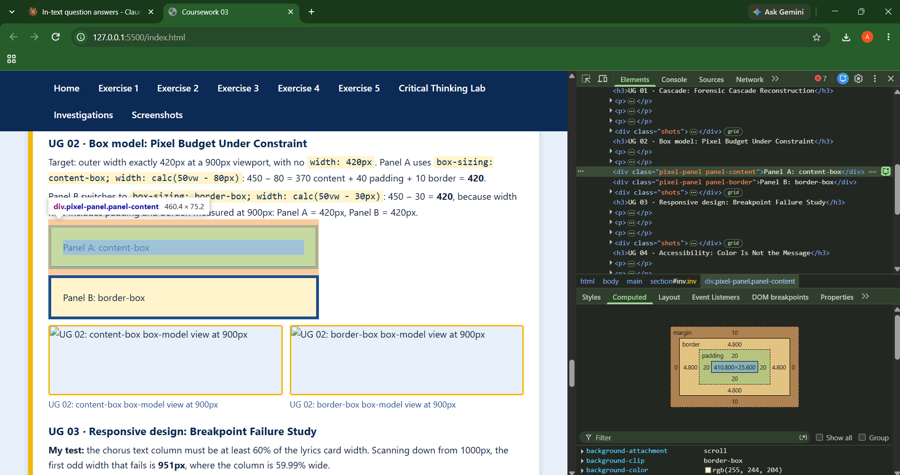
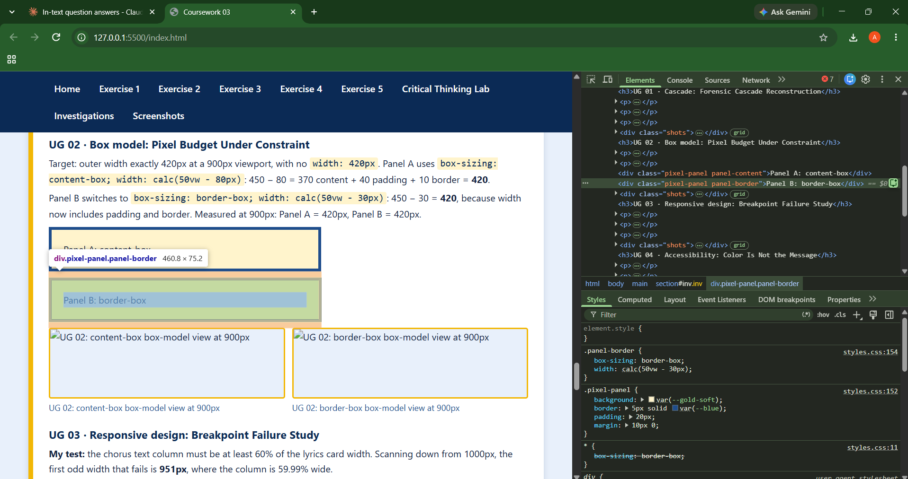
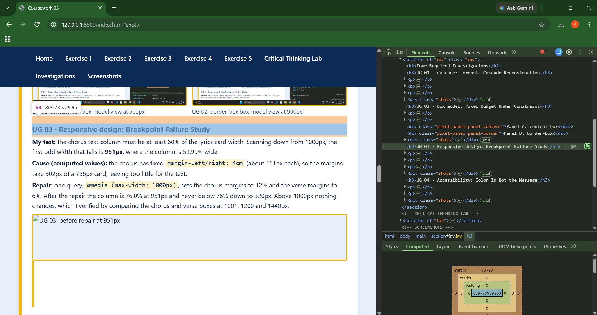
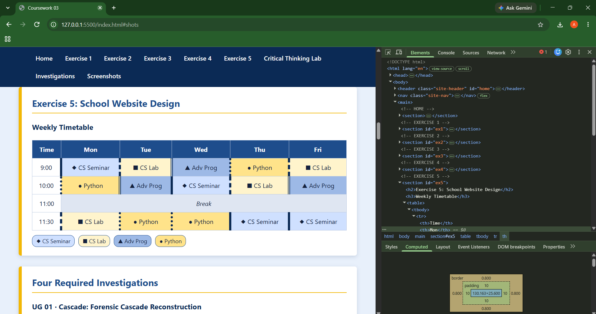
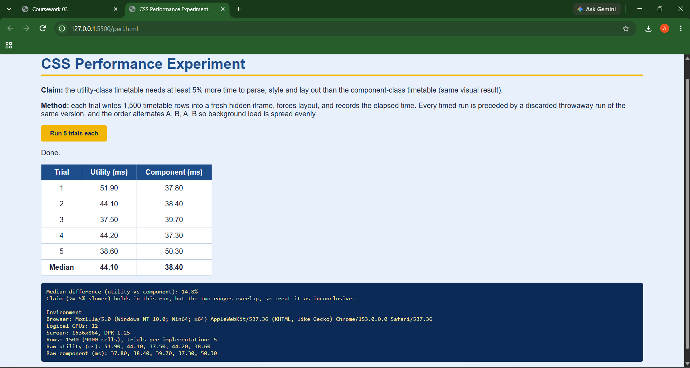

Home
This page contains my answers for Coursework 03: five CSS exercises, the Critical Thinking Lab, and two screenshots. Use the menu above to jump between sections. Buttons marked "View" open a popup.
Exercise 1: External Style Sheet
Changing text color to dark red using external CSS
This paragraph demonstrates the dark red text color applied via external CSS.
External CSS file (styles.css)
/* External stylesheet for Exercise 1 */
body {
color: darkred;
font-family: 'Roboto', sans-serif;
line-height: 1.6;
}<link rel="stylesheet" href="styles.css">Exercise 2: Debugging CSS
My Debugging Analysis
Mistake 1 (body): Original color: red → color: red;. The last declaration needs a semicolon or the next property added will break. I also added a serif fallback to font-family and changed the text to dark red, because pure red on ivory is hard to read.
Mistake 2 (h1, h2, h3): Original font-size: 2.5em for all three → separate sizes (2.5em, 2em, 1.5em). One shared size removes the visual hierarchy. The margin was also shortened to margin: 20px 0;.
Mistake 3 (.container): Original box-sizing: border-box → box-sizing: border-box;. The missing semicolon would swallow any property added below it.
body {
font-family: "Times New Roman", serif;
margin-left: 20%;
margin-right: 20%;
text-align: justify;
background: ivory;
color: darkred;
}
h1 { font-size: 2.5em; }
h2 { font-size: 2em; }
h3 { font-size: 1.5em; }
h1, h2, h3 { color: #b00000; margin: 20px 0; }
.container { width: 100%; padding: 20px; box-sizing: border-box; }
a { color: #0000ff; text-decoration: underline; }Exercise 3: Song Lyrics Styling
Rock-a-Bye Baby
Traditional lullaby
Nursery rhymes (public domain)
c. 1765
Rock-a-bye baby, on the treetop,
When the wind blows, the cradle will rock,
When the bough breaks, the cradle will fall,
And down will come baby, cradle and all.
Exercise 4: External Stylesheet
Open the separate song page. Its head links the included external lyrics.css:
<link rel="stylesheet" href="lyrics.css">This separates lyrics content from presentation while allowing the same styles to be reused.
Exercise 5: School Website Design
Weekly Timetable
| Time | Mon | Tue | Wed | Thu | Fri |
|---|---|---|---|---|---|
| 9:00 | CS Seminar | CS Lab | Adv Prog | Python | CS Lab |
| 10:00 | Python | Adv Prog | CS Seminar | CS Lab | Adv Prog |
| 11:00 | Break | ||||
| 11:30 | CS Lab | Python | Python | CS Seminar | CS Seminar |
Four Required Investigations
UG 01 · Cascade: Forensic Cascade Reconstruction
Test element: This text has three conflicting color rules.
Rules: em (green), .cascade-test (blue) and section #cascade-test (orange). Specificity is (ID, class, element): the first is (0,0,1), the second (0,1,0) and the third (1,0,1).
Prediction before loading: rank 1 is the ID selector, 2 is the class, 3 is em, so orange should win. Actual (Computed panel): rgb(194, 65, 12), orange. The class and element colors appear crossed out in the Styles panel as overridden.

UG 02 · Box model: Pixel Budget Under Constraint
Target: outer width exactly 420px at a 900px viewport, with no width: 420px. Panel A uses box-sizing: content-box; width: calc(50vw - 80px): 450 − 80 = 370 content + 40 padding + 10 border = 420.
Panel B switches to box-sizing: border-box; width: calc(50vw - 30px): 450 − 30 = 420, because width now includes padding and border. Measured at 900px: Panel A = 420px, Panel B = 420px.


UG 03 · Responsive design: Breakpoint Failure Study
My test: the chorus text column must be at least 60% of the lyrics card width. Scanning down from 1000px, the first odd width that fails is 951px, where the column is 59.99% wide.
Cause (computed values): the chorus has fixed margin-left/right: 4cm (about 151px each), so the margins take 302px of a 756px card, leaving too little for the text.
Repair: one query, @media (max-width: 1000px), sets the chorus margins to 12% and the verse margins to 6%. After the repair the column is 76.0% at 951px and never below 76% down to 320px. Above 1000px nothing changes, which I verified by comparing the chorus and verse boxes at 1001, 1200 and 1440px.

UG 04 · Accessibility: Color Is Not the Message
Audit (Exercise 5 timetable): dark text #14213d on Adv Prog #9db9e6 = 8.00:1, and on CS Lab #fff4cc = 14.50:1. Both pass WCAG AA (4.5:1), so contrast is fine. The problem is grayscale: CS Seminar (#cfe0ff) and Python (#ffe38a) turn into almost the same gray (222 and 225 out of 255).
Redesign: every subject now has a shape (◆ CS Seminar, ■ CS Lab, ▲ Adv Prog, ● Python) and a different left-border style (solid, dashed, double, dotted). Defense: the written subject name plus the shape carries the meaning; color only reinforces it. Peer initials and their reading of the revised states are written beside the grayscale capture.

Critical Thinking Lab
Question 1: Refactor With a Measured Tradeoff
Both architectures style the same Exercise 5 page and look identical: the utility version uses school-utility.css and the component version uses school.css.
Three criteria, defined before coding:
- Stylesheet size: number of selectors and declarations (fewer selectors and fewer lines is better).
- HTML weight: total classes on the table cells (fewer means cleaner markup).
- Change cost: how many places must change to recolor one subject (fewer is better).
Evidence against each criterion:
| Criterion | Utility | Component |
|---|---|---|
| 1. Selectors / declarations | 26 / 29 | 15 / 33 |
2. Classes on table cells (td/th) | 110 | 52 |
| 3. Places to change to recolor "Python" | 1 CSS rule (.bg-python), but the class is reusable, so it also recolors any other element using it | 1 CSS rule (.tt__cell--python), which only affects timetable cells |
Counts come from a script that strips comments and counts every selector, rule and declaration in the two stylesheets, and every class on each td/th in the two HTML files. Criterion 1 is mixed: component wins on selectors and utility wins on declarations.
Decision: I choose the component-oriented architecture. It wins criterion 2 clearly (about half the classes in the HTML), wins on selectors in criterion 1 (15 instead of 26), and gives a safer recolor for criterion 3 because a change cannot leak outside the timetable. It is slightly behind on declarations.
Acknowledged disadvantage: it has more declarations (33 vs 29), and its classes are tied to the timetable, so a new page cannot reuse them freely the way it can with utilities like .p-2 or .text-c.
Naming decision I can explain live: I named the class .tt__cell--lab, not .gold-cell. The name follows the BEM pattern (block tt, element cell, modifier lab) and describes the role, which is the subject, not the current color. If the theme changes from gold to green, the name still makes sense and the HTML does not change.
Version-history diff (utility → component): the stylesheet went from 27 lines to 16. The CSS diff removes 26 lines and adds 15, and the HTML diff changes 24 lines (12 removed, 12 added), because the long class lists on each cell become two classes. Commands and output:
$ git diff --no-index --stat school-utility.css school.css
school-utility.css => school.css | 41 +++++++++++++++-------------------------
1 file changed, 15 insertions(+), 26 deletions(-)
$ git diff --no-index --stat timetable-utility.html timetable.html
timetable-utility.html => timetable.html | 24 ++++++++++++------------
1 file changed, 12 insertions(+), 12 deletions(-)Question 2: Design a CSS Performance Experiment
Falsifiable claim: the utility-class timetable takes at least 5% more median time to parse, style and lay out than the component-class version. The claim fails if the utility median is less than 5% higher than the component median.
Repeatable experiment: for each version, the script below writes a 1,500-row timetable (9,000 cells) into a fresh hidden iframe, forces layout by reading offsetHeight, and times it with performance.now(). It takes 5 trials per version.
Open the experiment (perf.html)
function timed(html) {
var f = document.createElement("iframe");
document.body.appendChild(f);
var d = f.contentDocument;
var t0 = performance.now();
d.open(); d.write(html); d.close();
void d.body.offsetHeight; // force style + layout
var t = performance.now() - t0;
document.body.removeChild(f);
return t;
}
// before every timed run, run the same version once and throw the result away
function measure(html) { timed(html); return timed(html); }Controlled confounding variables:
- Content and appearance: identical rows, text and computed styles in both versions.
- Cold vs warm start: a fresh iframe for every trial, and a discarded throwaway run before every timed run.
- Ordering and background load: the two versions alternate which goes first each trial, the HTML string is built before the timer starts, and every trial ran in one browser instance with nothing else open.
- Network and cache: nothing is fetched, because the CSS is inline in the test document.
Raw measurements:
| Trial | Utility (ms) | Component (ms) |
|---|---|---|
| 1 | 147.50 | 126.60 |
| 2 | 126.20 | 133.20 |
| 3 | 179.20 | 139.20 |
| 4 | 193.00 | 130.40 |
| 5 | 134.30 | 181.70 |
| Median | 147.50 | 133.20 |
Median calculation: utility sorted is 126.2, 134.3, 147.5, 179.2, 193.0, so the median is 147.5 ms. Component sorted is 126.6, 130.4, 133.2, 139.2, 181.7, so the median is 133.2 ms. Difference = (147.5 / 133.2 − 1) × 100 = 10.7%.
Test environment: headless Chromium 141 on Linux x86_64, 1 logical CPU, 1280×800 screen, device pixel ratio 1, 1,500 rows (9,000 cells), 5 trials per version.
Repeat run (same setup): the utility median was 171.6 ms and the component median 153.4 ms, a 11.9% difference, with the ranges again overlapping (utility 135.8 to 223.8 ms, component 141.7 to 265.3 ms). The individual times moved a lot between runs, which is itself evidence of how noisy this measurement is.
Something I found while testing: my first run showed that whichever version ran first in a pair was always slower (about 183 ms against about 138 ms). That is an order effect, not a CSS effect. I fixed it by adding a discarded throwaway run before every timed run, then reran the experiment. The table above is the corrected run.
Conclusion: the medians differ by 10.7%, which is above the 5% threshold, but the two sets of times overlap (utility 126.2 to 193.0 ms, component 126.6 to 181.7 ms) and each version has a slow outlier. So the data does not reliably support the claim. The honest result is "no reliable difference detected": the utility version may be slightly slower, but five noisy trials on one machine cannot show it. It also says nothing about other browsers or real pages, and part of any difference could come from the utility HTML simply having more class text to parse.
Screenshots
